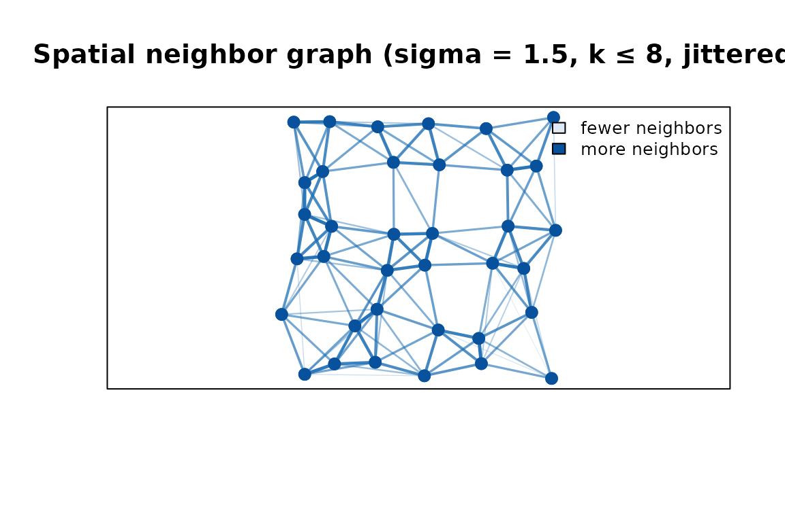
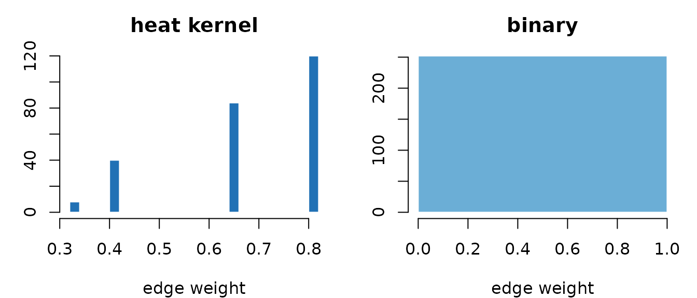
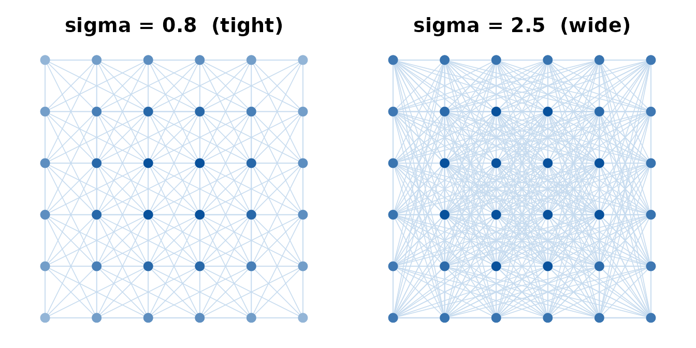
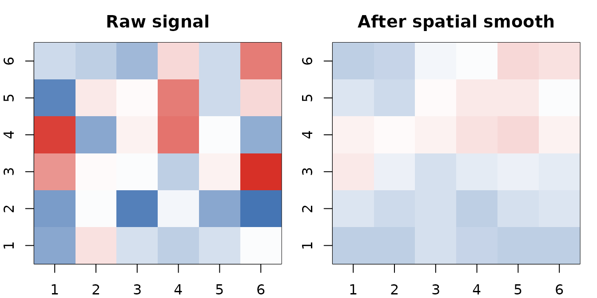
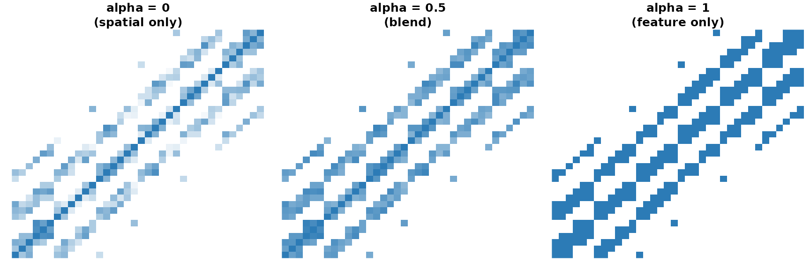
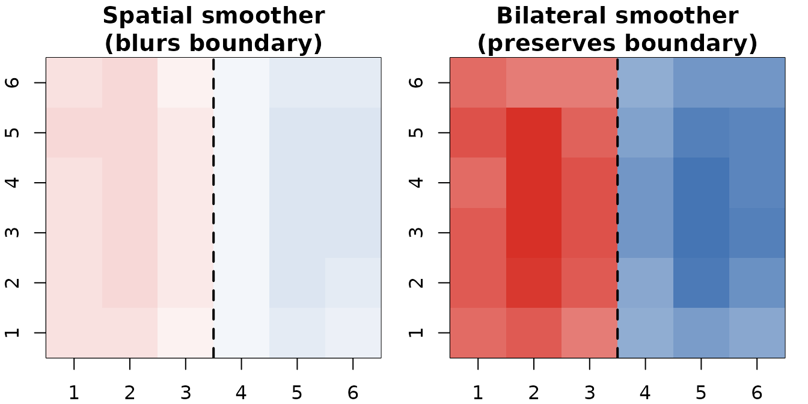
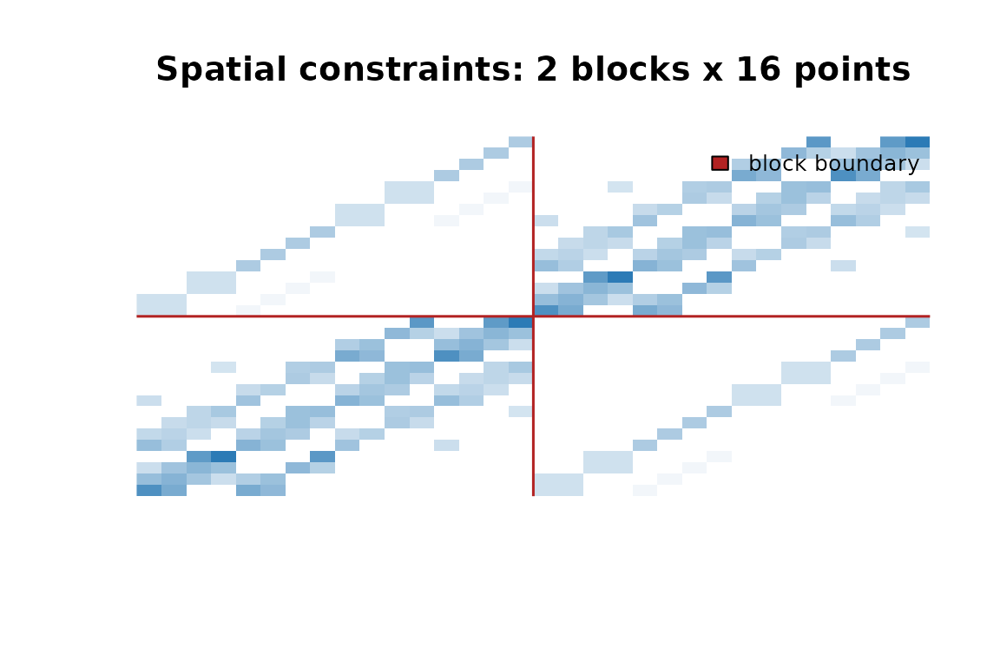

When coordinates matter more than features
Many data sets come with known spatial relationships: pixels in an image, voxels in a brain scan, sensors on a grid, measurements at geographic locations. For these data the question “who is my neighbor?” has a physical answer — Euclidean distance in coordinate space — rather than a statistical one derived from feature vectors.
adjoin provides a focused set of functions that build
adjacency matrices directly from coordinate matrices. The output is
always a sparse Matrix with the same interface as
feature-based graphs: adjacency(),
laplacian(), and normalization all work the same way.
Your first spatial graph
We will use a 6 × 6 grid throughout this vignette — small enough to visualize, representative of image and brain-imaging data.
coords <- as.matrix(expand.grid(x = 1:6, y = 1:6)) # 36 points, 2 columns
dim(coords)
#> [1] 36 2spatial_adjacency() connects every point to its nearest
spatial neighbors. Two parameters shape the neighborhood:
-
sigma— the heat kernel bandwidth (larger = broader neighborhood) -
nnk— the hard cap on neighbor count (keeps the matrix sparse)
A <- spatial_adjacency(coords, sigma = 1.5, nnk = 8,
weight_mode = "heat",
include_diagonal = FALSE,
normalized = TRUE)
cat("size:", nrow(A), "x", ncol(A),
"| non-zero entries:", Matrix::nnzero(A), "\n")
#> size: 36 x 36 | non-zero entries: 296
cat("symmetric:", isSymmetric(A), "\n")
#> symmetric: TRUEEach of the 36 grid points has up to 8 heat-kernel-weighted neighbors
within radius sigma × 3 = 4.5 grid units. Normalization
symmetrizes the matrix
()
so that edge weights are comparable across nodes with different numbers
of neighbors.

Spatial neighbor graph on a jittered 6 × 6 grid. Thicker, darker lines are higher-weight edges (nearer neighbours); lighter lines are lower-weight (farther neighbours). Point colour encodes degree.
Corner and edge points have fewer neighbors than interior points. Because the coordinates are slightly irregular, edge weights also vary: thicker, darker lines connect closer pairs; faint lines connect pairs near the neighbourhood boundary.
Two weight modes
weight_mode controls how spatial distance is converted
to an edge weight.
| Mode | Edge weight | Best for |
|---|---|---|
"heat" |
exp(−d²/2σ²) | Smooth, distance-proportional weights |
"binary" |
1 for every neighbor | Structural analysis, graph spectra |
A_heat <- spatial_adjacency(coords, sigma = 1.5, nnk = 8,
weight_mode = "heat",
include_diagonal = FALSE, normalized = FALSE,
stochastic = FALSE)
A_binary <- spatial_adjacency(coords, sigma = 1.5, nnk = 8,
weight_mode = "binary",
include_diagonal = FALSE, normalized = FALSE,
stochastic = FALSE)
Heat weights decay continuously with distance; binary weights are uniform within the neighborhood radius.
The heat kernel produces a smooth spectrum between 0 and 1; binary
produces a single spike at 1. Use "heat" when distance
matters, "binary" when only presence of a connection
matters.
Effect of sigma on neighborhood size
Increasing sigma extends the neighborhood and softens
the weight decay, adding more edges. The nnk cap limits
runaway growth.
A_tight <- spatial_adjacency(coords, sigma = 0.8, nnk = 27,
weight_mode = "heat",
include_diagonal = FALSE, normalized = TRUE)
A_wide <- spatial_adjacency(coords, sigma = 2.5, nnk = 27,
weight_mode = "heat",
include_diagonal = FALSE, normalized = TRUE)
c(tight_edges = Matrix::nnzero(A_tight) / 2L,
wide_edges = Matrix::nnzero(A_wide) / 2L)
#> tight_edges wide_edges
#> 238 534
Tight sigma (0.8) leaves corner and edge points with few connections; wide sigma (2.5) connects most points richly.
Spatial smoothing
spatial_smoother() converts a spatial adjacency into a
weighted averaging operator. Multiplying any signal vector by
S replaces each point’s value with a distance-weighted
average of its neighbors.
S <- spatial_smoother(coords, sigma = 1.5, nnk = 8, stochastic = FALSE)
set.seed(42)
signal_raw <- rnorm(36)
signal_smoothed <- as.numeric(S %*% signal_raw)
One pass of the spatial smoother turns Gaussian noise (left) into a smoothly varying field (right). The same heat kernel defines both neighbor selection and weight decay.
Set stochastic = TRUE to apply Sinkhorn–Knopp
normalization and produce a doubly stochastic smoother (rows
and columns sum to 1).
The spatial Laplacian
spatial_laplacian() returns L = D − A, where D is the
degree matrix. Multiplying a signal by L measures its local curvature —
how much each point deviates from its neighbors.
L <- spatial_laplacian(coords, dthresh = 4.5, nnk = 8,
weight_mode = "binary", normalized = FALSE)
# Row sums of a Laplacian are zero by definition
range(round(rowSums(L), 10))
#> [1] 0 0Use normalized = TRUE for the symmetric form I −
D^{−1/2} A D^{−1/2}, which is standard for spectral clustering and graph
signal processing.
Combining space and features
When you have both coordinates and feature observations,
weighted_spatial_adjacency() blends the two similarity
sources. The alpha parameter sweeps from pure spatial
weighting to pure feature weighting.
set.seed(42)
features <- matrix(rnorm(36 * 5), nrow = 36, ncol = 5) # random 5-d features
A_sp <- weighted_spatial_adjacency(coords, features,
alpha = 0, sigma = 2, nnk = 8)
A_mix <- weighted_spatial_adjacency(coords, features,
alpha = 0.5, sigma = 2, nnk = 8)
A_ft <- weighted_spatial_adjacency(coords, features,
alpha = 1, sigma = 2, nnk = 8)
Adjacency heat maps for three alpha values. Spatial-only (left) shows a clean block structure; feature-only (right) looks noisier because the random features carry no spatial signal.
With random features the feature-only matrix is noisy. When features carry genuine spatial signal — say, image intensities — the blend rewards both proximity and similarity.
Bilateral smoothing
bilateral_smoother() is a spatial smoother that
down-weights neighbors with very different feature values. This is the
classic bilateral filter from image processing: it smooths within
regions but preserves sharp edges between them.
# Piecewise-constant signal with a hard boundary at x = 3.5
signal_field <- ifelse(coords[, "x"] <= 3, -1, 1) + rnorm(36, sd = 0.2)
feature_mat <- matrix(signal_field, ncol = 1)
B <- bilateral_smoother(coords, feature_mat,
nnk = 8, s_sigma = 1.5, f_sigma = 0.5)
signal_bilateral <- as.numeric(B %*% signal_field)
signal_spatial <- as.numeric(S %*% signal_field) # plain spatial smoother
Bilateral smoother (right) preserves the hard boundary between the two signal regions; a plain spatial smoother (left) blurs across it.
The f_sigma parameter controls how sensitive the filter
is to feature differences: smaller values enforce stricter edge
preservation.
Multi-block spatial constraints
spatial_constraints() handles the case where the same
spatial layout appears across multiple blocks — for example,
the same brain or image grid measured across subjects or sessions. It
builds a combined constraint matrix encoding:
- Within-block connections: heat-kernel spatial similarity within each block
- Between-block connections: correspondence between matching locations across blocks
The shrinkage_factor balances these two: 0 = all
within-block, 1 = all between-block.
coords_small <- as.matrix(expand.grid(x = 1:4, y = 1:4)) # 16-point grid
# Pass a list with one entry per block (same grid repeated for two subjects)
S2 <- spatial_constraints(list(coords_small, coords_small), nblocks = 2,
sigma_within = 1.5, nnk_within = 6,
sigma_between = 2.0, nnk_between = 4,
shrinkage_factor = 0.15)
dim(S2) # 32 x 32: 2 blocks x 16 points
#> [1] 32 32
32x32 constraint matrix for two 4x4 spatial blocks. Diagonal blocks capture within-block spatial similarity; off-diagonal blocks link corresponding locations across blocks. The leading eigenvalue is 1 by construction.
The result is normalized so its largest eigenvalue equals 1 — it plugs directly into spectral methods that expect a properly scaled operator.
For heterogeneous blocks where each block has different feature
observations, feature_weighted_spatial_constraints()
extends this with per-block feature weighting.
Function reference
| Function | What it builds |
|---|---|
spatial_adjacency() |
Symmetric spatial similarity from one coordinate set |
cross_spatial_adjacency() |
Rectangular similarity between two coordinate sets |
spatial_laplacian() |
Graph Laplacian L = D − A from coordinates |
spatial_smoother() |
Row-stochastic spatial averaging operator |
weighted_spatial_adjacency() |
Spatial adjacency blended with feature similarity |
bilateral_smoother() |
Edge-preserving spatial smoother |
spatial_constraints() |
Multi-block constraint matrix for repeated layouts |
feature_weighted_spatial_constraints() |
Multi-block constraints with per-block feature weighting |
normalize_adjacency() |
Row-normalize any adjacency matrix |
make_doubly_stochastic() |
Sinkhorn–Knopp doubly stochastic normalization |
Where to go next
-
Feature-based graphs —
graph_weights()andnnsearcher()build graphs from feature vectors rather than coordinates; seevignette("adjoin"). -
Diffusion —
compute_diffusion_kernel()propagates information through any adjacency matrix, spatial or feature-based. -
Label constraints —
expand_label_similarity()combines spatial proximity with class labels for semi-supervised methods. -
API reference —
?spatial_adjacency,?spatial_constraints,?bilateral_smootherfor full parameter documentation.